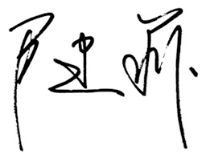

编者序：教育的常识
常识是姿态最低的学问。
教育学是最该普及的常识。
当教育和常识走到一起，就是沃土和种子走到一起。
十多年前，我的《好妈妈胜过好老师》出版，它令人惊奇的销量缘于令人耳目一新的内容，诸多观点颠覆了很多人旧有的认知，被誉为一部创新性的作品。
事实是，作为一部个人原创教育著作，本质上它是对经典教育学和心理学的再陈述。关于育人，古今中外的哲人先贤已有超越时空的见解，我只是一个继承者和传导者，借由自己的作品让经典落地，朴素地回归大众，让家庭教育学作为常识进入千家万户。
多年来，从社会到家庭，反教育的观念和行为比比皆是，它们制造的问题和观念亦渐渐以“常识”的姿态存在着，贻害无穷。
真正的常识与宇宙规律同频，是人类对宇宙规律的认识，也是人类永恒的向往和需求，必然对人类有正面服务功能。
在常识被扭曲或遗忘的年代，我们有必要呼唤常识，重写教育的常识。
这是一本做成日历的小书，我们愿意用这样日日相近的方式，把属于一小部分人的智力转化为大众心态，把专业知识变为公众的常识。
教育的真正准备是完善自己，想把孩子教育好，首先家长自己要成长，而我们愿意做你成长的陪伴者和共同学习者。
有一位智者说过这样一段动人的话：放弃对结果的执着，心像天空一样开阔，而行为却细密认真，只管低头浇灌，让成就的花朵自然开放。
爱与自由就在我们的日常生活中，一年365天，让我们天天在一起，共同学习一些教育的常识！

2020年8月10日